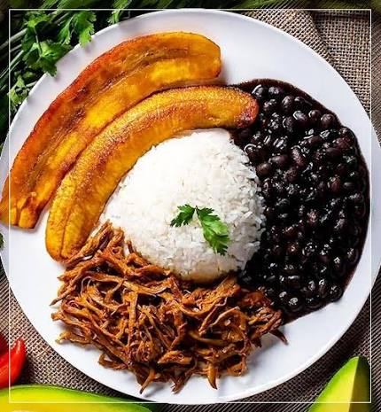

Pabellon criollo

Descripcion
El pabellón criollo es un plato tradicional de la gastronomía venezolana, además de considerarse como el «plato nacional de Venezuela». Es llamado así por su semejanza con un pabellón o bandera, ya que combina diferentes colores.
Ingredientes
Arroz blanco
Caraota negra
Carne mechada
Tajada de platanos maduros
Preparacion
Remoja las caraotas en agua con el bicarbonato durante la noche anterior. Escúrrelas, lávalas y colócalas en una olla con agua limpia que las cubra y un poco de sal. Cocínalas a fuego medio hasta que ablanden (si es necesario, agrega más agua tibia). En una sartén, haz un sofrito con la cebolla, el pimentón, el ajo y los ajíes picados finamente. Cuando los vegetales estén marchitos, añádelos a las caraotas, sazona con comino, sal y el toque de azúcar. Deja cocinar hasta que espese.
Cocina la carne de falda en una olla con agua, sal y un trozo de cebolla hasta que esté muy blanda. Retírala del agua (guarda el caldo) y déjala enfriar. Desmecha la carne en hebras finas con las manos o un tenedor. En una sartén grande, haz un sofrito con los aliños finamente picados y el tomate. Agrega la carne desmechada, un chorrito del caldo reservado, salsa inglesa, comino, sal y pimienta. Deja cocinar a fuego medio hasta que los sabores se integren y el guiso quede jugoso.
En una olla, sofríe el ajo y el ají dulce en un chorrito de aceite. Agrega el arroz y revuélvelo hasta que esté brillante. Añade el doble de agua que de arroz, sal al gusto y deja hervir a fuego alto. Cuando el agua empiece a secarse, baja el fuego al mínimo, tapa la olla y deja que termine la cocción hasta que el grano quede suelto.
Pela los plátanos y córtalos en lonjas diagonales o longitudinales. Calienta suficiente aceite en una sartén a fuego medio-bajo. Fríe las tajadas hasta que estén doradas por ambos lados y colócalas en un plato con papel absorbente para retirar el exceso de grasa.
Sirve porciones de cada preparación en el mismo plato, manteniendo sus colores separados.
Home